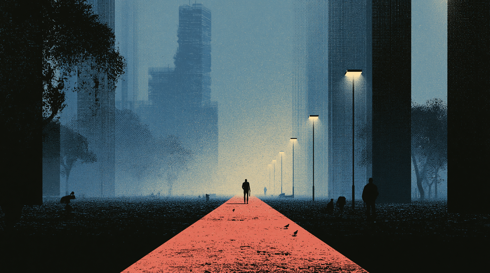

Master the sophisticated register of award-winning architectural presentation and interior design discourse — vocabulary, syntax, and rhetoric for the highest professional contexts.
The jury praised the practice for achieving a ___ of raw materiality and spatial refinement — a quality rarely seen in projects of this scale.
During her presentation at the Pritzker symposium, the architect argued that the building's ___ was not merely decorative but functioned as a dynamic threshold between interior and exterior worlds.
The interior scheme was described as ___, with each material and finish chosen to reinforce a single overarching concept rather than to impress through variety.
When presenting to the client board, she was careful to frame the spatial sequence not as a series of rooms, but as a ___ — an unfolding narrative that the occupant would inhabit over time.
The practice's submission cited the building's ___ as central to its award nomination — specifically its capacity to reduce energy consumption while maintaining exceptional daylighting performance.
Critics noted that the practice's use of exposed concrete was neither brutalist nor minimalist, but occupied an ambiguous ___ — one that made the building simultaneously familiar and deeply unsettling.
The jury was struck by the building's quality — the way light, air, and movement were allowed to permeate every threshold, dissolving the conventional boundary between public and private.
The practice demonstrated rare mastery of expression — the exposed joinery, the cantilevered stair, and the load-bearing stone wall each made the logic of construction legible to the informed observer.
The ground floor slab was deployed as a horizontal from which the vertical elements of the scheme were measured and ordered — a device that gave the project its remarkable compositional discipline.
What elevates this project above its peers is not its formal invention but its clarity — the way the brief's competing demands for openness and privacy, community and contemplation, have been resolved with apparent ease.
The scheme draws meaningfully on local — not as pastiche or surface quotation, but as a rigorous rethinking of traditional building types in response to contemporary needs.
The jury's decision was also shaped by the project's dimension: the building repays close attention, offering habitual users a heightened awareness of material, light, and time that few public buildings manage to sustain.
On touch devices: tap a phrase to select it (gold outline), then tap a category zone to place it.
Match each architectural term to its correct meaning as used in design presentations and critical writing.